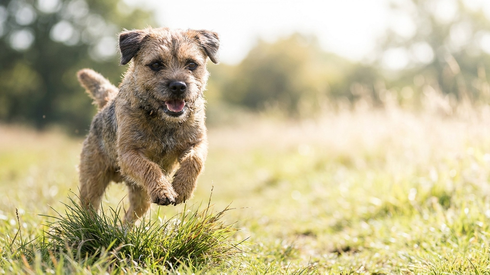

Хозяева бордер-терьеров часто слышат: «Какая тихая собачка». Это иллюзия. За скромной внешностью и рыже-пшеничной жёсткой шерстью скрыт норник, которого веками выводили бежать за лошадьми по пересечённой местности и лезть за лисой под землю. В статье разбираем, что это значит для жизни с породой и кому она подойдёт, а кому нет.
🐾 Ваш питомец — бордер-терьер?
Заведите профиль в AnimaLife: приложение запомнит породу, возраст и вес и будет подсказывать по уходу именно для неё. Вопросы AI-ветеринару — круглосуточно и бесплатно.
Завести профиль → Завести в MAX →
У вас iPhone? AnimaLife есть в App Store
Бордер-терьер формировался на границе Англии и Шотландии в XVIII-XIX веках. Задача была конкретная: собака должна успевать за охотничьими лошадьми на кросс-кантри, а в нужный момент уходить в нору и выгонять лисицу. Для этого нужен маленький, но выносливый корпус, жёсткая шерсть на любую погоду и крепкая психика.
Отсюда три качества, которые в породе не выветриваются:
Бордер-терьер хорошо уживается с детьми и незнакомыми людьми. По меркам терьеров это редкость. Агрессию к человеку порода не проявляет. С другими собаками тоже обычно нет проблем, если социализация началась рано.
Сложности в другом.
Бордер-терьер весит 5-7 кг. Многие принимают это за показатель того, что собаке хватит коротких прогулок. Нет.
Минимум для городского бордера: 1-1,5 часа активного движения в день с бегом, а не просто ходьбой. Хорошо добавить нюхательные игры, апортировку, аджилити или манотрейл. Порода учится охотно и быстро, базовый курс послушания осваивает без труда, но требует последовательного хозяина: бордер хорошо запоминает, где можно «продавить».
Рабочая схема для квартиры: утренняя пробежка или велопрогулка плюс вечерняя игра с подачей. Не работает: две выгулки по 15 минут и надежда, что всё само рассосётся.
Жёсткая двойная шерсть бордера не требует частого мытья и почти не несёт запаха. Раз в полгода нужен тримминг: ручное выщипывание отмершей ости. Машинка портит текстуру и защитные свойства покрова, поэтому стрижка терьеров не подходит. Тримминг делает специалист, знакомый с жесткошёрстными терьерами, или хозяин после обучения.
По здоровью порода считается крепкой. По вопросам профилактики, питания и осмотров обсудите всё со своим ветеринаром: он подберёт план под конкретного питомца.
Подходит: активным людям и семьям с детьми школьного возраста; тем, кто занимается спортом на улице и готов брать собаку; опытным владельцам терьеров или тем, кто готов вложиться в обучение.
Не подходит: если дома уже живут кошки или грызуны (риск высокий); если нет возможности давать ежедневную физнагрузку; если хочется спокойную декоративную собаку. Бордер-терьер рабочий по природе и по темпераменту, он не превращается в диванного компаньона от отсутствия задач.
🐾 У вас бордер-терьер?
AnimaLife соберёт уход под породу: к каким болезням есть склонность, что проверять по возрасту, чем кормить и когда пора к врачу. Бесплатно, прямо в мессенджере.
Собрать план ухода → Собрать в MAX →
У вас iPhone? AnimaLife есть в App Store
🐾 Понравился разбор?
Подпишитесь на канал — каждый день разбираем по одному тревожному симптому у кошек и собак: что в пределах нормы, а когда пора к врачу. Подпишитесь, чтобы не пропустить разбор, который может спасти здоровье вашего питомца.
Материал носит информационный характер и не заменяет очную консультацию ветеринара.